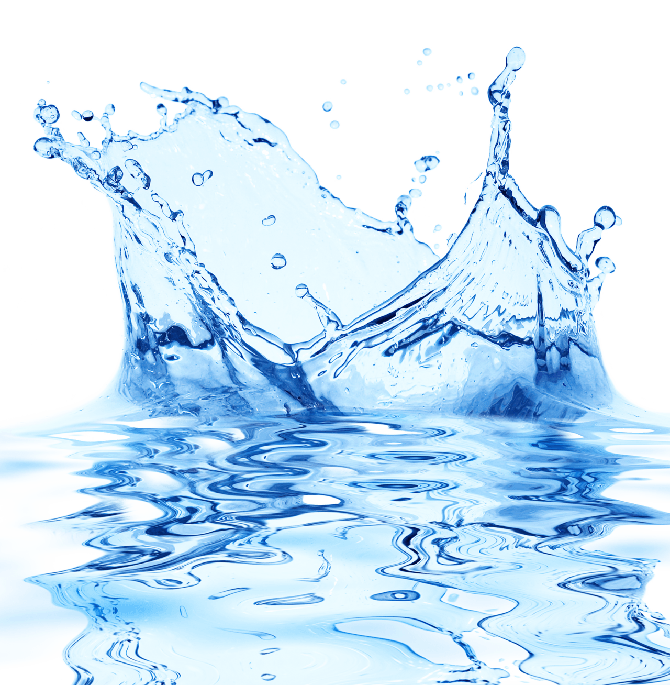
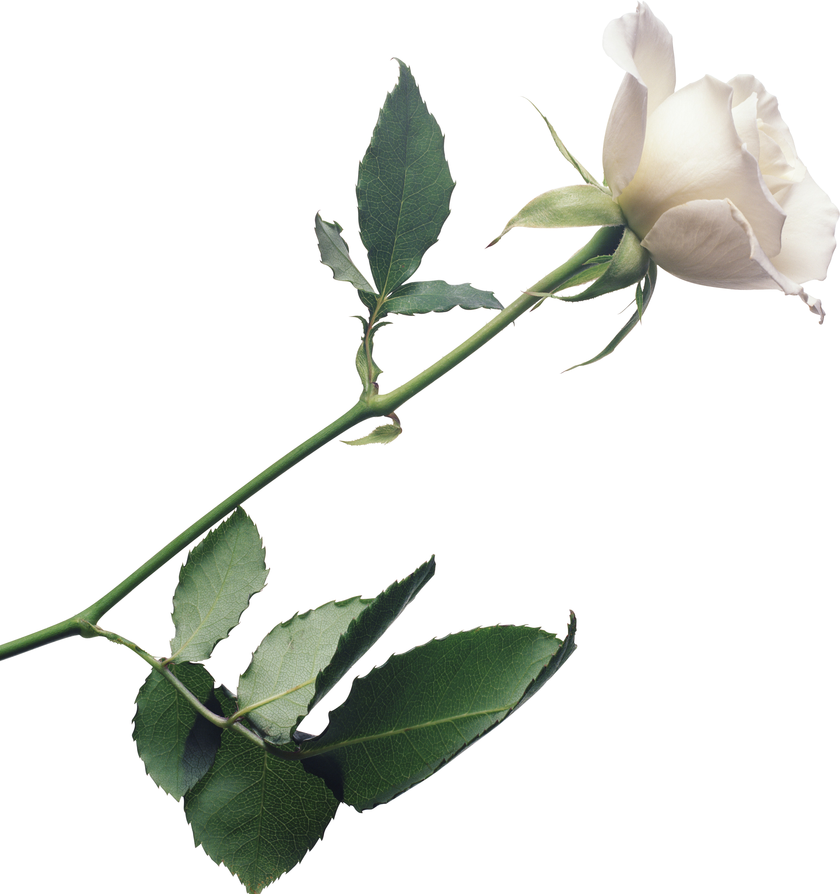
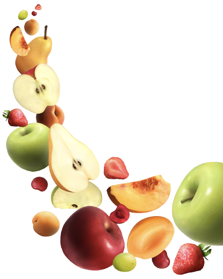
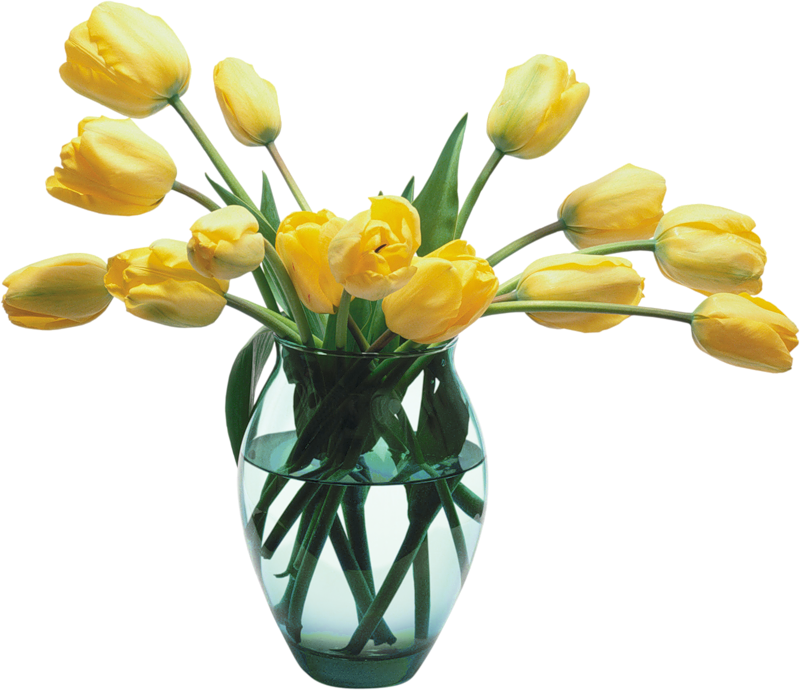
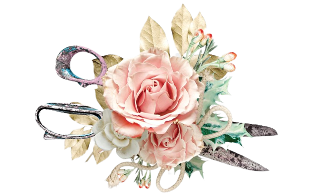

Tip 1
Water
Be mindful when watering and draining. For potted plants better to underwater than overwater. For flowers in vases, replenish the water frequently.

Tip 2
Stem
Trim at least a half inch of stem off your flowers before you put them in a vase and each time you change the water.
Tip 3
Light
Choose plant based on your light. Keep temparature stable and your flowers away from heat and bright light.

Tip 4
Fruit
Avoid sitting your flowers beside ripening fruit or vegetables, especially bananas and apples.

Tip 5
Vase
After you throw out your last arrangement, be sure to wash the vase/container very thoroughly in hot soapy water or, better yet, in your dishwasher.

Tip 6
Nutrients
Be mindful of using fertilizers with house plants. For flowrs in vases, use “flower food” for most flowers to make the flowers last longer.

Tip 7
Cut
Prune old growths on plants to help plants grow again. Use sharp scissors when cutting to ensure a clean cut that leaves cells unharmed.